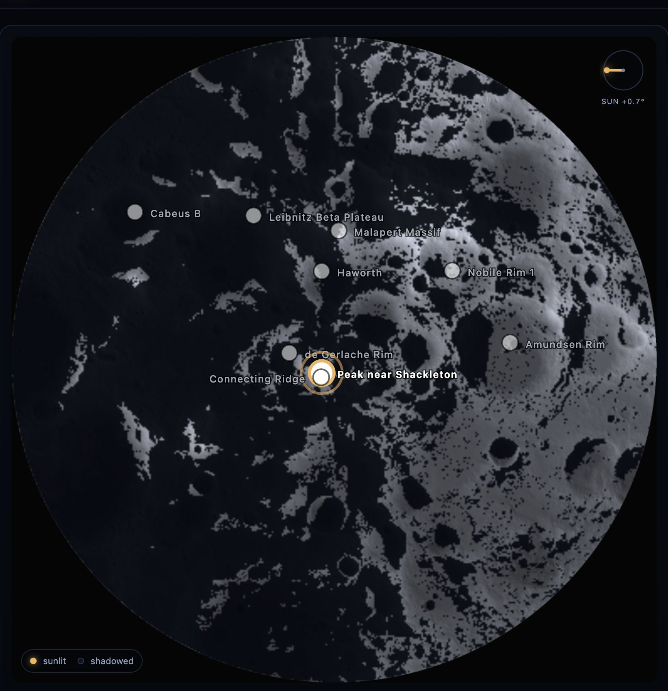
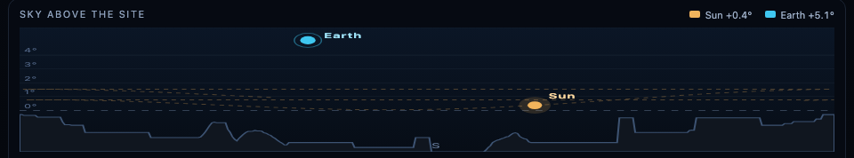
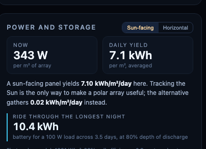
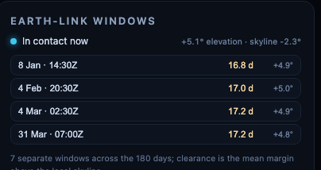

A landing-window navigator for the lunar south pole. Real terrain, real ephemerides, and the illumination and Earth-link windows that decide when a mission can land.
Numbers on the right are the published range for south-pole landing regions — and the range our tool reproduces independently from LOLA terrain.

NASA LRO laser altimetry, LDEM_80S_80M, 80 m/pixel, south polar stereographic. 7,600 × 7,600 samples.
From each point, 360 azimuths out to 64 km, with lunar curvature correction, give the true local horizon.
VSOP87/ELP-class positions rotated into the IAU 2015 lunar frame — including the Moon's 1.54° tilt and libration.
A point is sunlit when solar elevation clears its horizon; Earth-linked while Earth is above the skyline. Then windows are searched.



Validated against NASA's own 18.6-year LOLA visibility map (r = 0.995, RMSE 1.4 percentage points) and against the LROC image-derived map built from 3,807 photographs (r = 0.980). That comparison caught a real defect — the horizon was being read 180° from the Sun — which is why these numbers differ from earlier drafts. The 73% is at a region centre, not a searched optimum, so it sits below the published 85–88% for optimised clusters. The power panel shows why polar arrays are mounted vertically: a flat panel gathers 0.02 kWh/m²/day here against 6.0 sun-facing.
LRO LOLA gridded south polar digital elevation model, product LDEM_80S_80M, NASA Planetary Data System Geosciences Node (LRO-L-LOLA-4-GDR-V1.0).
Ephemerides and the lunar rotation model from Astronomy Engine (VSOP87/ELP), oriented with the IAU WGCCRE 2015 lunar frame.
node scripts/build-terrain.mjs